|
Hello dahlia friends!
Our January celebration at Spence Farm was a
blast. We are so glad so many of you were able
to come. I don’t think there was a slow minute
during the whole event. It was a delight to see
everyone introducing themselves to each other
and having a wonderful time. We didn’t want the
party to end! Thank you so much for all the
delicious dishes of food to share as we had
quite the buffet. We especially want to thank
all of you for the many hands that helped with
setup, and the breakdown and everywhere in
between. Everyone was so helpful in pitching in.
We have such a wonderful group of members! Thank
you!
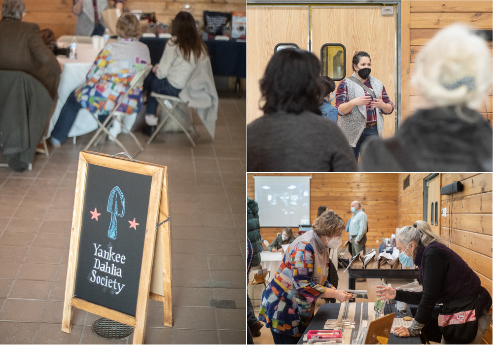
Photography by: Brad Keyes, Misty Florez &
John Livornese
It was a treat to have Susan Kelly, a co-founder
of Generous Gardeners of Gloucester, MA along
with their dahlia whisperer Antonietta Calabrese
to share about maintaining over 45 public garden
spaces. We will totally plan a trip to
Gloucester to see the dahlias!!
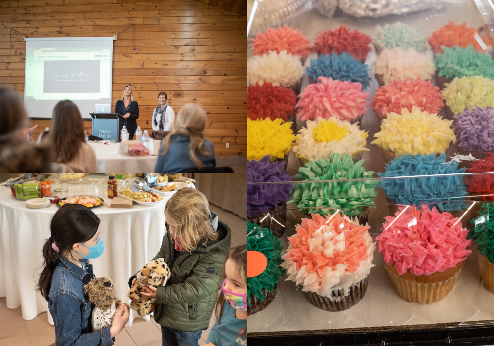
Photos by: Misty Florez & John
Livornese
48 days until the first day of spring!! We are
counting down the days to Sunday, March 20th. In
the meantime we have a wonderful morning Zoom
meeting on the calendar this Sunday, February
6th. We are resuming having meetings the First
Sunday of the month and have a wonderful slate
of programs lined up for this year.
Check out our calendar
for a look ahead and to save-the-dates!
– Misty & Carol
|
|
Our Next Meeting
Special Guest Pauline Mourits from Cloverhome
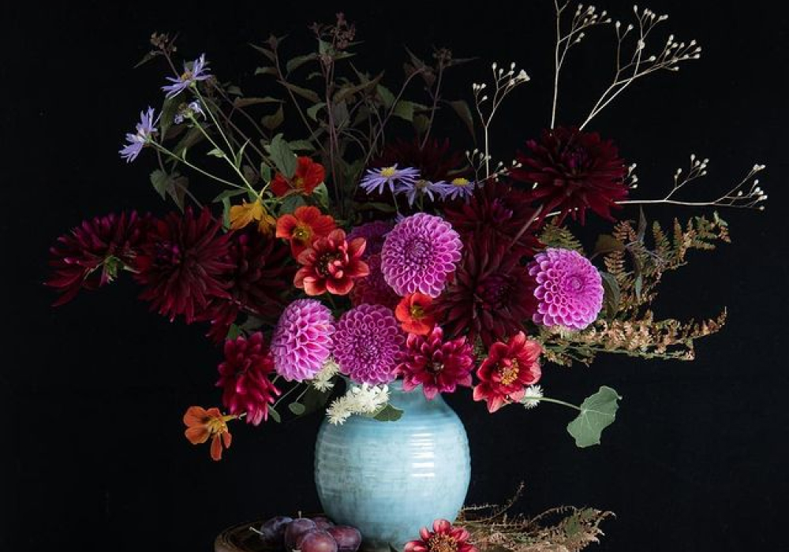
Our February meeting will be via Zoom. Join us
with a cup of coffee in the morning as we meet
online with other dahlia growers around the
United States and the world.
Yankee Dahlia Society is absolutely excited for
everyone to meet Pauline Mourits, a talented
photographer and writer with a love for
gardening and dahlias! We are thrilled that
Pauline will join us remotely all the way from
the Netherlands. Pauline will take us on a slide
show tour of Dutch growing and some of their
amazing gardens, of course highlighting dahlia
culture. You won’t want to miss Pauline sharing
with us her beautiful images and talking about
her design style and her approach to growing and
arranging flowers with a special emphasis on how
she photographs flowers.
Yankee Dahlia Society is proud and honored to
connect with dahlia growers all around the world
and share in the joy dahlias bring.
https://www.cloverhome.nl/
https://www.instagram.com/cloverhome.nl/
February 6th Zoom Meeting
-
10:15 - Login to say hello and get settled.
Meeting will start promptly at 10:30 am
- 10:30-10:40 - Welcome; Monthly overview
-
10:40 - 11:40 - Presentation by Pauline
Mourits
- 11:40-12:00 - Q&A with Pauline
-
12:00-12:30 - Mingle with Members and Bring
your Dahlia Growing Q&A’s
Sunday, February 6th, 10:30 am – 12:30 pm
(EST)
Zoom Link: https://us06web.zoom.us/j/83954118074?pwd=SUREN1Uwc3Q1aHV3OGhyWndEZHV0Zz09
|
|
Y.D.S. Tuber Shop
We are so glad many of you found dahlias to fill
your shopping cart at our first tuber sale this
month. Thank you for making our first sale such
a success. Purchasing your tubers from the club
goes right back into supporting our dahlia
community. We want to let everyone know we have
reopened the shop and will keep it open for
Y.D.S. members who would like to purchase more
tubers. The tuber shop restock will happen soon!
We have some more dahlias to divide and will
have more to make available for sale. Be sure to
follow us on social media and check your emails
for info on the restock.
Anyone needing help with purchasing tubers
online can call or text for assistance. We are
happy to help.
Misty’s Cell 732-674-2087
Carol’s Cell 508-826-9214
Orders can be picked up during our March 6th or
May 1st in person meetings at Spence Farm in
Woburn, MA. Let us know when you would like to
pick up via SignUp Genius and we’ll make sure to
have your order ready.
We can also ship your order to you in the spring
when the weather warms and allows for safe
delivery. Shipping fees will be calculated and
billed separately. Simply sign up for this
option on SignUp Genius.
Pickup at Meeting or Shipping SignUp
|
|
Member Spotlight
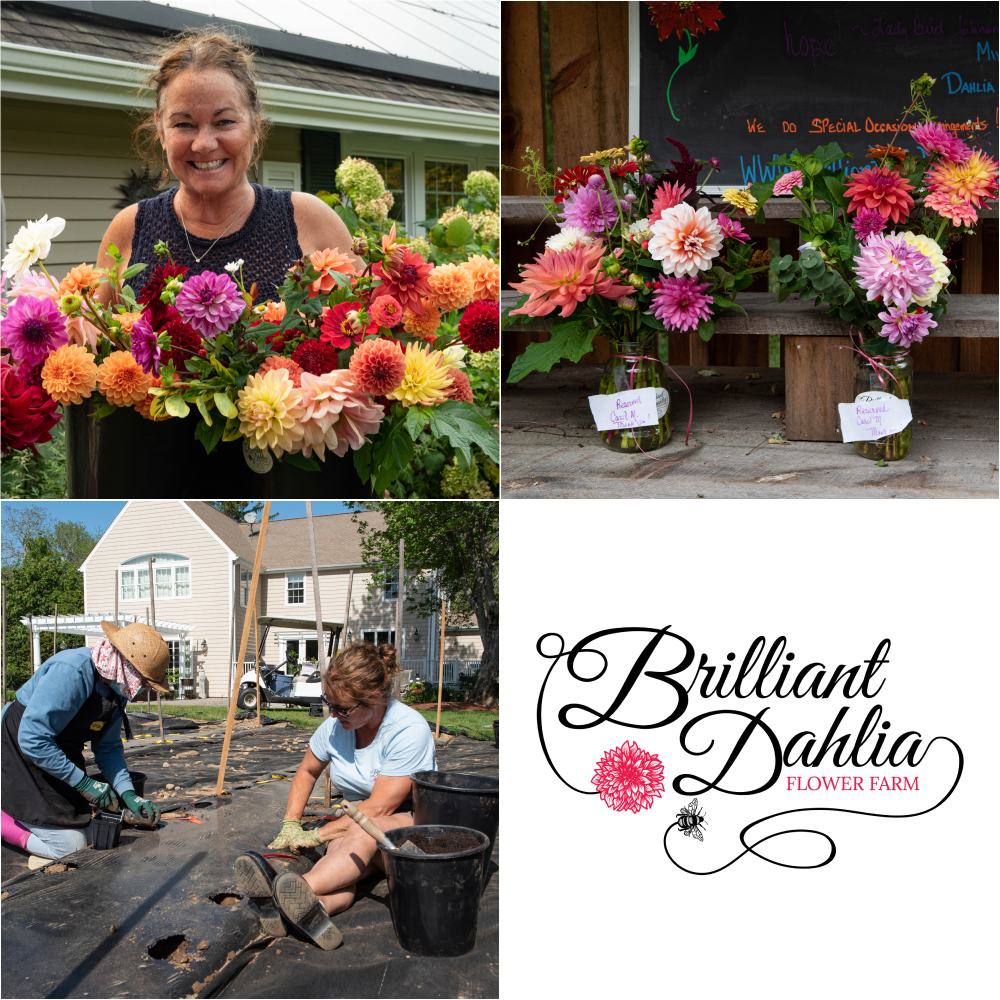
Sharon Hoskins from Brilliant Dahlia Flower Farm
Photography by: Misty Florez
Sharon Hoskins of Brilliant Dahlia Flower Farm
in Rehoboth, MA was one of our 2021 Yankee
Dahlia Society Growing Partners. During the
blooming season, her dahlias take center stage
in her farm stand bouquets and CSA shares. Thank
you Sharon for helping grow dahlias for Y.D.S.!
Sharon Hoskins has been passionate about growing
flowers since she and her husband, Erik bought
an old chicken farm in 1998. Each year, the
family's garden beds multiplied and so did their
family. With three growing and active boys, two
careers and a lot of pets, farming their land
was a dream that held a special place in their
hearts for many years before they could do
anything serious about pursuing their dream.
In December 2019, Sharon retired from a 24 year
career in federal law enforcement and finally
had time to put the large acreage farm to work.
She enrolled in the Floret's Flowers course in
January 2020 and started Brilliant Dahlia Flower
Farm, ("BDFF") shortly after. Never one to be
shy, Sharon offered flower CSAs that first year
in business before she even had flowers planted
in the ground (besides her perennial beds.)
Sharon's original plot was designed to be a 50'
x 50' annual bed which soon became a 83' x 99'
plot after her also not shy husband, started
prepping the field. Clearly, husband and wife
were more than excited to start this new
venture.
The farm specializes in dahlias and grew over
200 varieties in 2021. They also have a large
collection of peonies, hypericum, David Austin
Roses, lilacs, fragrant narcissus and many
perennials. Annual staples of their farm include
strawflowers, tulips, sunflowers, lisianthus,
ranunculus and much much more.
BDFF is now entering their third year in
business. In the first two years, flower CSAs
have been a strong base of their business model.
In year two, the farm was also able to host some
specialty classes and workshops on their farm to
support their mission to include the local
community in sustainable agriculture. Coming
into year three, the farm is excited about the
prospects of having more events on the farm,
including flower to farm dinners and other
speciality events.
BDFF is situated in Rehoboth MA, a Right to Farm
community, where farms are becoming more rare.
In the past five years, local developers have
taken over some of the larger parcels of farms
and golf courses that used to fill the
landscape, so preserving BDFF as a flower farm
is even more important to Sharon & Erik now,
than it was when they bought that old chicken
farm in 1998.
|
|
Dahlia Tip
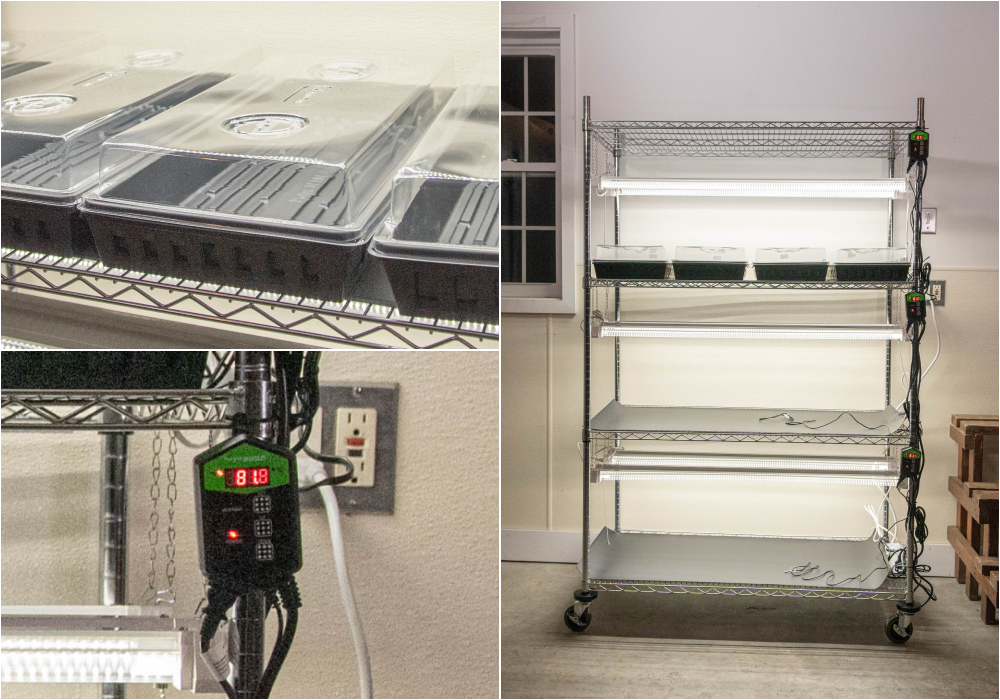
Get yourself set up with a rack and grow lights
Have you thought about trying your hand at tuber
cuttings to propagate stock on some of your
favorite varieties or are you considering
starting your tubers inside to get a jump on the
growing season? Now is the time to get your
lighting set up and ready as next month we’ll be
taking cuttings. If you have the space, go big
and use a shelf or two to start your vegetable
seeds or flower seeds at the same time.
Misty’s Grow Light Setup:
-
6-Tier Heavy Duty Metal Wire Shelving
Unit (48 in. W x 72 in. H x 24 in. D)
-
Industrial Caster
-
Sunco Lighting 10 Pack LED Shop Light for
Workshop Garage 4FT, Plug in Linkable
Utility Light Fixtures, 40W, 5000K
Daylight, 4100 LM, Clear Lens, Pull Chain,
Hanging/Mounted, ETL, Energy Star
-
VIVOSUN 48"x20.75" Seedling Heat Mat and
Digital Thermostat Combo Set
-
BN-LINK 8 Outlet Surge Protector with
Mechanical Timer (4 Outlets Timed, 4
Outlets Always On) - White
*Alternatively you may like to use a
smart plug for the lights: Kasa Smart
Plug
|
|
Dahlia Forms
Straight Cactus
Variety: Kari Fruit Salad
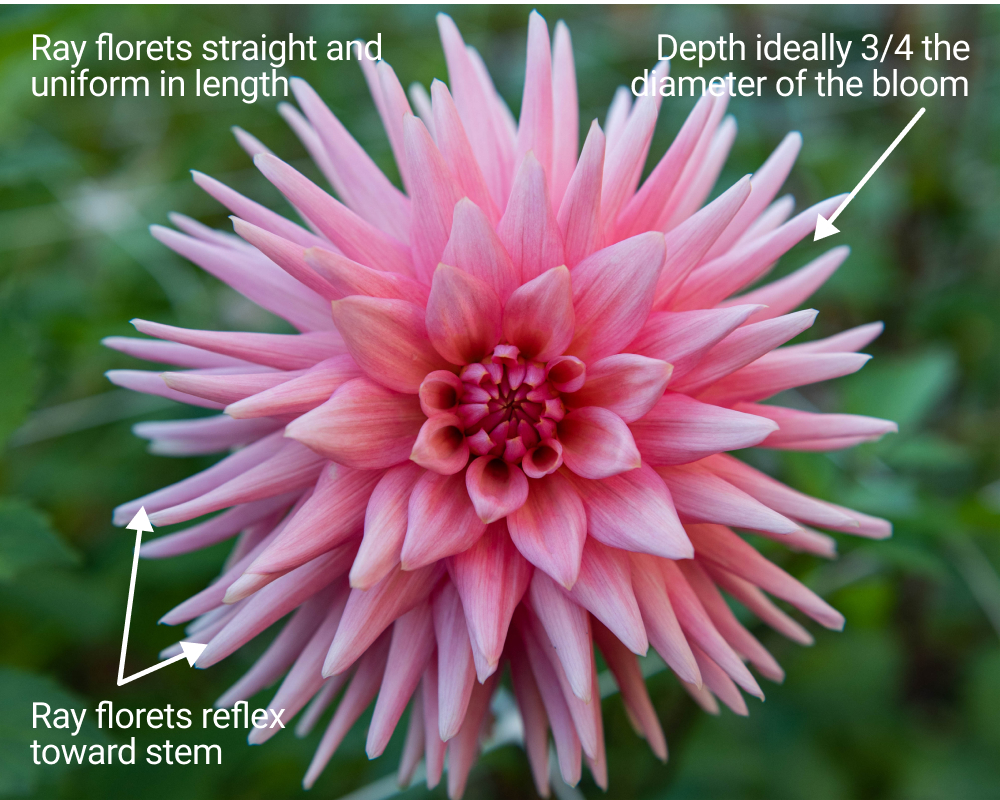
Photography by: Misty Florez
|
|
|
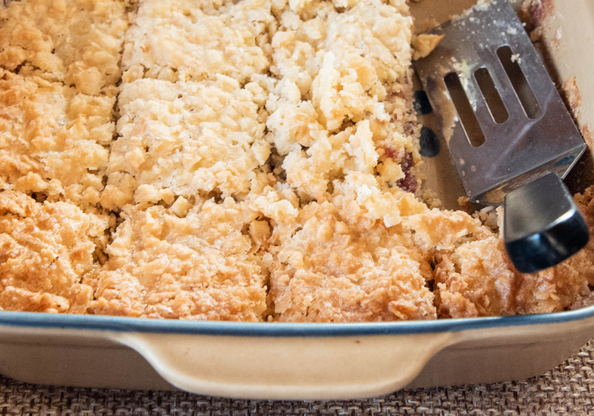
Photo: Raspberry Coconut Bars (Please send
the recipe if you made these!)
Wanted: Yummy PotLuck Recipes
We found out during our January meeting what
wonderful chefs we have in our club! What a
delicious spread of food we had to share and
enjoy during the party. Thank you all for taking
the time to make and bring something special for
our celebration. We are looking for your recipes
to collect and share with each other. Please
email your recipe to
info@yankeedahliasociety.com
subject line: I’d love to share my recipe!
|
|
2021 Photography Contest Winners
2021 Y.D.S. Photography Contest Winners
Congratulations to our winners of the first
Y.D.S. photography contest. Each winner will
have a choice of a Y.D.S. Yeti Mug. Our thanks
to everyone who entered their photos, and to
everyone who took the time to vote for their
favorite image in each category.
We loved seeing your images and look forward to
seeing more entries again this year.
Winners:
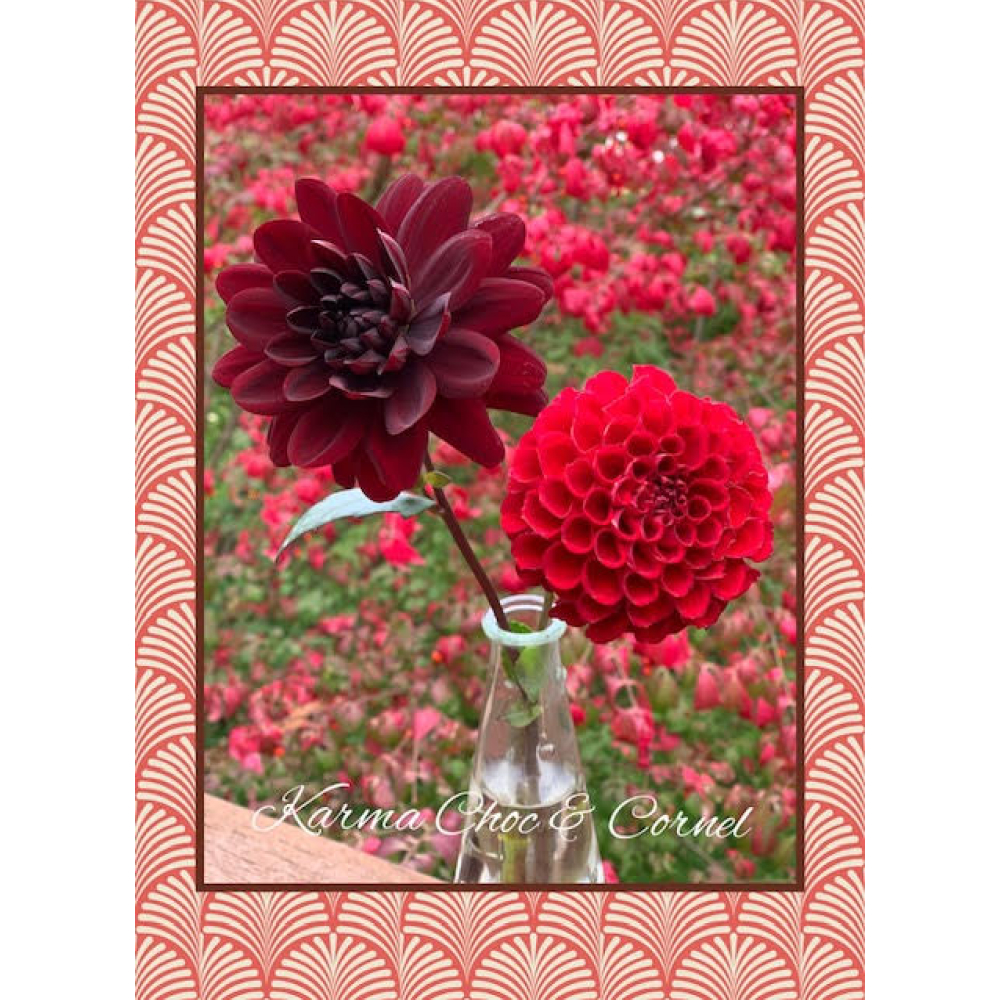
Category 1: Cornel Flower Arrangement –
Linda Soucy
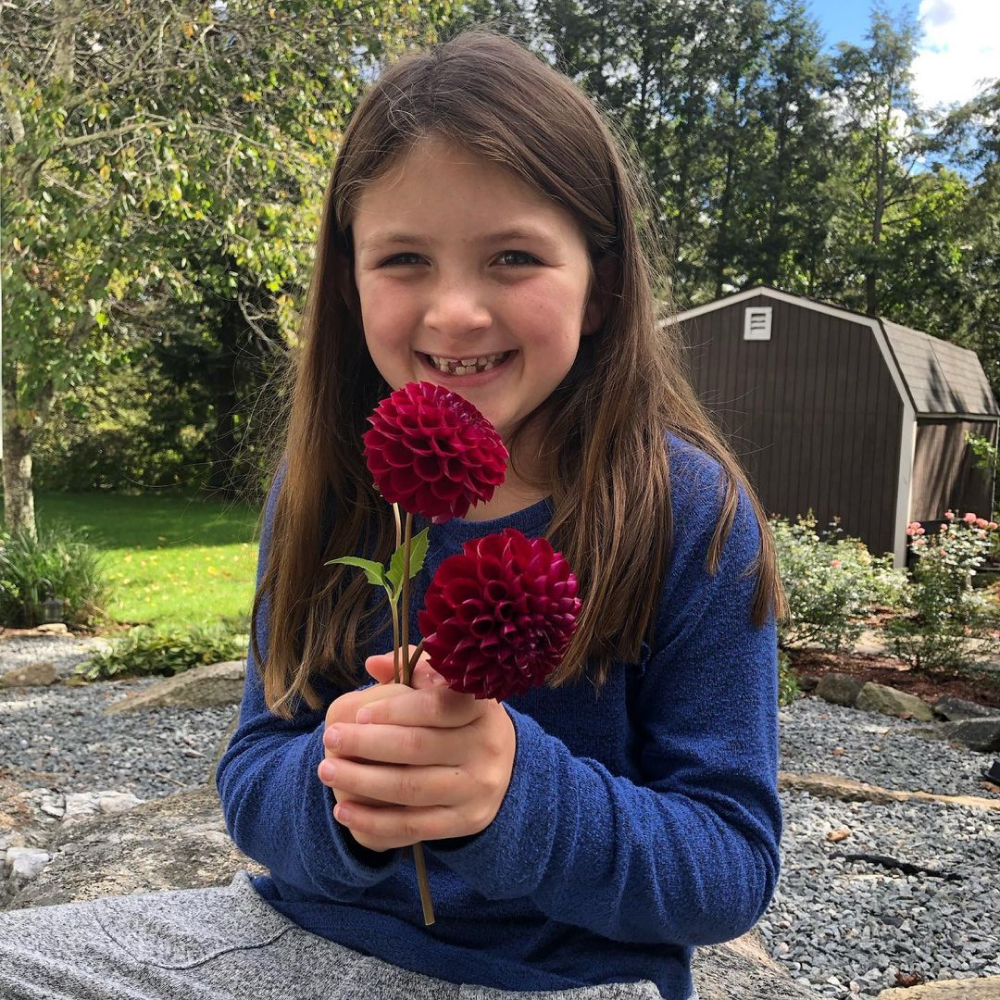
Category 2: Cornel Handful (with more
than 1 bloom) – Danielle Connell
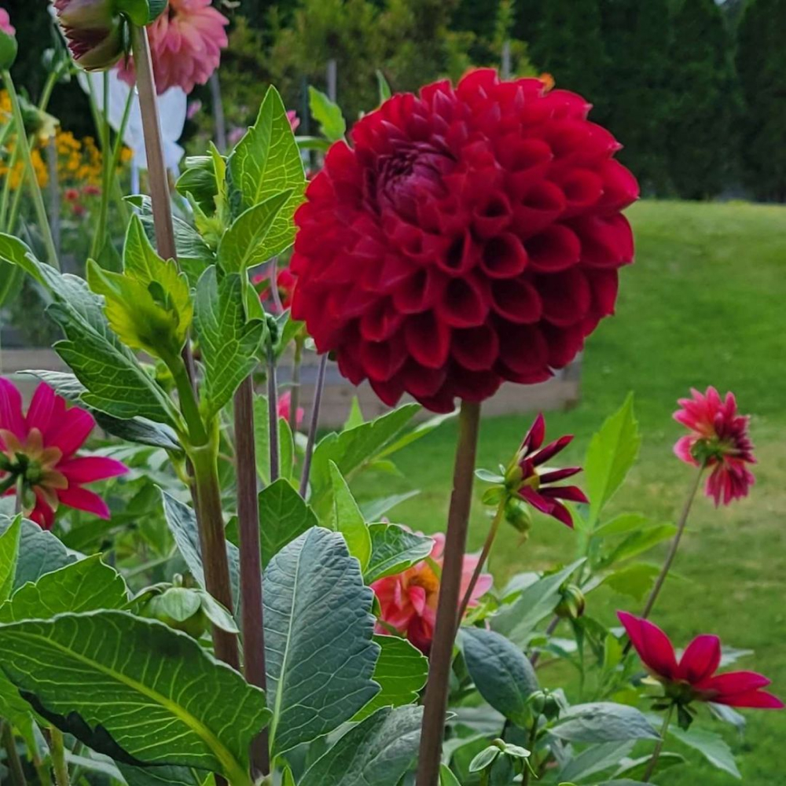
Category 3: Cornel Selfie – Andrea
Campbell
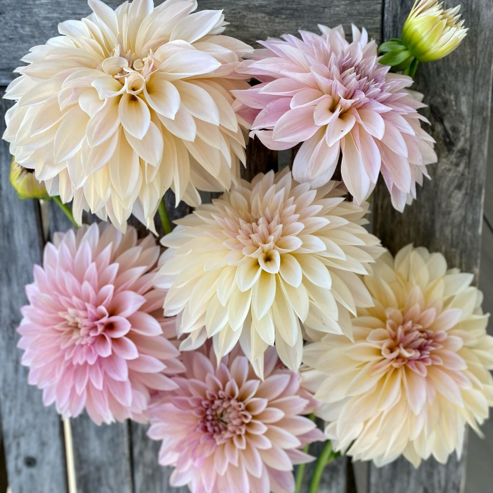
Category 4: Photographer's Choice – Anne
Traer
|
|
2021 ADS Photo Contest
The American Dahlia Society also runs a photo
contest. Winners for the 2021 contest have been
announced. See the link below to view the
beautiful images.
For the first time they are also running a
People’s Choice award and voting is still open.
Click on the link below to view the images and
vote for your favorite.
People’s Choice Voting Poll Open through
February 7, 2022
https://www.dahlia.org/peoples-choice-2021-ads-photo-contest/
2021 ADS Photo Contest Winners Announced
https://www.dahlia.org/and-the-winners-are-3/
|
|
ADS Member Questionnaire
(for Y.D.S. members who are also members of
ADS)
The American Dahlia Society (ADS) Executive
Board meets regularly to plan and implement
activities and programs that meet your needs as
a dahlia grower, exhibitor, and hybridizer. We
are asking ADS members to complete a
questionnaire that was designed to provide
information and insights that will be used by
the Executive Board when planning activities and
programs. The questionnaire is available at
https://www.dahlia.org/survey2022/. The questionnaire will take about 15 minutes
to complete.
Please ask your members who belong to ADS to
complete the questionnaire. The questionnaire
will be closed on February 9th.
Brad Freeman, President
American Dahlia Society
|
|
American Dahlia Society Membership
It is never too late to join our National Dahlia
Organization. Get a discount on ADS membership
for January - December 2022 when registering
through Y.D.S. To register through Y.D.S., email
info@yankeedahliasociety.com
with the subject line
“ADS Registration”
ADS is the national organization
Benefits Include:
-
Access to the members-only section of the ADS
website, with in-depth information about
everything to do with dahlias
-
Quarterly bulletins packed with information
and updates from local chapters including
Y.D.S.
-
A copy of the Classification & Handbook of
Dahlias
-
Supporting the network of dahlia Shows,
Judging Roster & Show Reports
-
Support the mission of dahlia research, trial
gardens, classification system and seedling
evaluations
-
USA Individual Membership (1-person,
1-Classification book) $24
-
USA Family Membership (2-people,
2-Classification books) $27
Follow ADS on
Facebook
and
Instagram
For those that have questions about also joining
ADS please reach out and we are happy to share
with you more information about the benefits as
it is a wonderful way to expand your dahlia
knowledge.
|
|
|
Upcoming Work Days
New Dates Added!!!
February 5th: Dividing Club Tubers @ Woburn,
MA (9am-2pm)
February 9th - 13th: Dividing Club Tubers @
Woburn, MA (9am-2pm)
February 16th - 27th: Filling Early Bird
Access Orders & Inventory @ Woburn, MA
(9am-2pm)
Upcoming Meetings & Events
February 6th: Zoom Meeting - Special Guest
Pauline Mourits from Cloverhome (10:30am -
12:00pm)
March 6th: How to take cuttings & start dahlia
seeds with Y.D.S Co-Presidents Carol Palmer
and Misty Florez @ Spence Farm, 41 Wyman
Street, Woburn, MA (11am-2pm)
April 3rd: Zoom Meeting - Dahlias from Down
Under with Warren Vigor
May 6: Dahlia Hybridizing, Dahlia Sports &
Seed Collecting with Y.D.S member Andrea
Campbell @ Spence Farm, 41 Wyman Street,
Woburn, MA (11am-2pm)
|
|
|
|
|